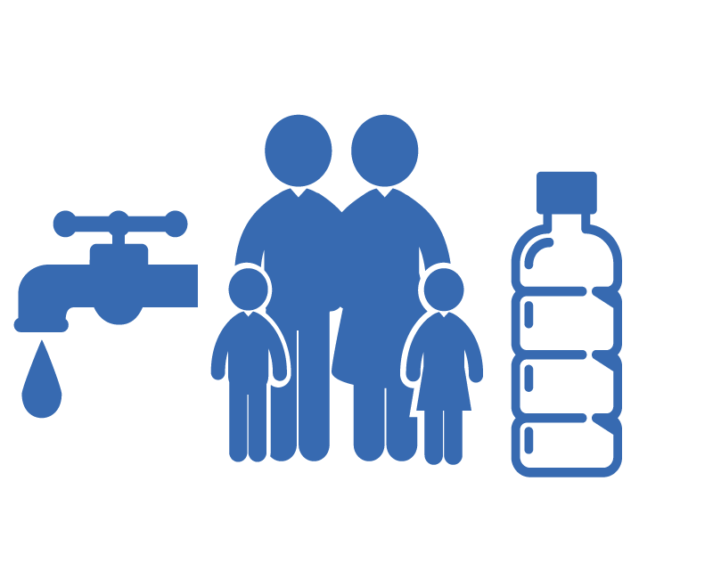
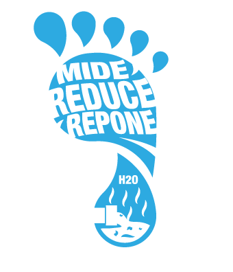

Es un indicador que define el volumen total de agua dulce usado para producir los bienes y servicios producidos por una empresa, o consumidos por un individuo o comunidad. Mide en el volumen de agua consumida, evaporada o contaminada a lo largo de la cadena de
suministro, ya sea por unidad de tiempo para individuos y comunidades, o por unidad producida para una empresa.
Se puede calcular para cualquier grupo definido de consumidores (por ejemplo, individuos, familias, pueblos, ciudades, departamentos, naciones o productores como organismos públicos, empresas privadas o el sector económico).
Trata de suplir esta deficiencia, buscando evaluar el nivel de apropiación e impacto sobre los recursos hídricos que requiere la producción de un bien o la prestación de un servicio a lo largo de toda su cadena de producción, incluyendo, en el cálculo, las materias primas.
Su cálculo se establece de forma modular, es decir, sumando las necesidades de uso y consumo de agua de cada etapa de producción desde el origen hasta el consumidor final.
El concepto de huella hídrica fue introducido en 2002 por el profesor Arjen Hoekstra de UNESCO-IHE como un indicador alternativo del uso del agua. El concepto fue refinado y los métodos de contabilidad se establecieron en una serie de publicaciones realizadas por Ashok Kumar Chapagain y Arjen Hoekstra
en el Instituto UNESCO-IHE para la Educación. Las publicaciones más detalles sobre cómo calcular las huellas del agua es el informe de 2004 sobre la 'huella hídrica de las naciones de la UNESCO-IHE’.
La cooperación entre las instituciones globales líderes en el campo ha llevado a la creación de la Water Footprint Network, que tiene como objetivo coordinar los esfuerzos para desarrollar y difundir el conocimiento sobre los conceptos de huella hídrica, métodos y herramientas. ISO (International Organization for Standardization) lanzó un grupo mundial para escribir una Norma Internacional. Tras 5 años de discusiones, la norma se publicó en agosto de 2014.
ISO 14046:2014 - Gestión Ambiental - Huella Hídrica - Principios, requisitos y directrices puede ser aplicada a los productos, procesos u organizaciones; se basa en una evaluación del ciclo de vida (según y compatible con ISO 14044); es modular; identifica el potencial de los impactos ambientales relacionados con el agua; incluye las dimensiones geográfica y temporal pertinentes; identifica la cantidad de uso del agua y los cambios en la calidad del agua; y utiliza el conocimiento hidrológico.
La nueva norma ISO 14046 unifica conceptos a nivel mundial en huella hídrica y pasa a ser el referente internacional para empresas, procesos y productos.
Por otra parte, en 2008 se funda la Water Footprint Network, con el objetivo de promover el uso justo inteligente del agua. La Water Footprint Network se crea como una red dinámica y global con más de 200 socios: desde grandes empresas a pequeños proveedores, instituciones financieras y organismos reguladores, organizaciones sin fines de lucro y académicos con el objetivo de compartir los últimos avances en conocimiento, información e ideas para combatir la escasez de agua.
El agua es necesaria para cultivar y procesar alimentos, también brinda energía a la industria con el objeto de satisfacer a una población en constante crecimiento. La gestión inadecuada de las aguas residuales urbanas, industriales y agrícolas, conlleva a que el agua que beben cientos de millones de personas se vea peligrosamente contaminada o polucionada químicamente. La contaminación del agua también provoca que parte de los ecosistemas acuáticos terminen desapareciendo por la rápida proliferación de algas invasoras que se nutren de todos los nutrientes que les proporcionan los residuos.
Un aspecto importante es la división del agua según su grado de contaminación.
✔ El primero es la polisaprobia: agua que está fuertemente contaminada con carbono orgánico, caracterizada por una población de organismos específicos y normalmente con una concentración muy baja e incluso total ausencia de oxígeno.
✔ El segundo es la mesosaprobiana: los organismos que viven en medios con una cantidad moderada de materia orgánica y variable cantidad de oxígeno en disolución, como algunas algas clorofíceas.
✔ El tercero, se encuentra la oligosaprobiana: zonas de vertido de aguas residuales a un río, donde las aguas han alcanzado el aspecto y características de su estado natural.
✔ La deforestación en las zonas costeras y la creciente demanda de la construcción de gigantescos edificios. Esto produce que los suelos en esas zonas se vuelvan vulnerables.
✔ Según un artículo de Responsabilidad Socio Sanitaria en octubre de 2016, se calcula que unas 842.000 personas mueren cada año de diarrea como consecuencia de la contaminación del agua, de un saneamiento insuficiente o de una mala higiene de las manos.
✔ A su vez, si le agregamos que la pavimentación no permite el paso a las filtraciones de aguas fluviales cuando llueve, el ecosistema se ve seriamente perjudicado.
En consideración a la problemática actual, y que se generará en el futuro con la temática del agua, es que se impone un obligado, y perentorio, análisis sobre la misma. El consumo de agua, no solo a nivel local, sino también mundial, va en constante aumento, y en consecuencia, los recursos hídricos, y sus reservas, van decayendo.
El agua, recurso multifuncional, con una demanda creciente conforme al aumento exponencial de la población mundial, puede plantear conflictos a nivel comunitario sectorial, y también planetario. Si bien la cantidad de agua permanece sensiblemente constante, su deterioro en términos de calidad provoca como inevitable consecuencia, la reducción o disminución de su disponibilidad.
Así como ya se estudia cuánto carbono se lanza a la atmósfera, necesitamos saber también cuánta agua emitimos a la atmósfera a causa de las actividades humanas y conocer mejor sus consecuencias. La incertidumbre todavía es grande. Hacen falta más investigaciones. En cualquier caso, se puede decir que el consumo de agua en las ciudades no es nada en comparación con el de la agricultura o la generación hidroeléctrica. Hay que ahorrar agua en casa, sí, y tomar medidas como ducharse en vez de bañarse, por ejemplo, pero a nivel global dichas actividades consumen mucho más. Habría que medirlas y reducirlas. Los estudios de impacto ambiental no piden el agua que se pierde por evotranspiración (la pérdida del agua de una superficie y la transpiración de las plantas cuando absorben el agua). Generar energía con agua es limpio, pero hay que incluir los efectos que no se tienen en cuenta.
La huella hídrica tiene necesariamente una dimensión temporal y una dimensión espacial. Se debe calcular con datos recogidos en un período de tiempo concreto (habitualmente los datos utilizados son anuales) y en un lugar geográfico perfectamente delimitado (como pueden ser una planta industrial, una cuenca de un río, o una región).
La huella de agua es un indicador geográficamente explícito, que no sólo muestra volúmenes de uso y contaminación de agua, sino también las ubicaciones. Sin embargo, la huella de agua no proporciona información sobre cómo el agua consumida afecta positiva o negativamente a los recursos locales de agua, los ecosistemas y los medios de subsistencia.
El consumo directo para la fabricación de un producto incluye el agua utilizada y/o contaminada durante el proceso de fabricación y el agua incorporada en el propio producto como ingrediente. Por su parte, el consumo indirecto corresponde a toda el agua necesaria para producir las diferentes materias primas utilizadas en el proceso (productos de la cadena de suministro).
A nivel mundial, la actividad agrícola usa alrededor del 70% de toda el agua consumida en el planeta y se calcula que, en los próximos años, debido al aumento poblacional y los patrones de consumo, la cantidad de agua necesaria para producir los alimentos, fibras y biocombustibles requeridos por la población incrementen el uso del agua aumente hasta en un 55%.
El indicador de huella hídrica en la agricultura puede permitir establecer políticas y acciones concretas para ahorrar agua en el sector que mayor requerimiento del recurso tiene.
El consumo de agua promedio de un mexicano equivale a mil 978 metros cúbicos por año, mientras que el promedio mundial es de mil 385. Cinco por ciento de ella se utiliza en las actividades diarias, como preparación de los alimentos, en limpieza personal y del hogar. El otro 95 por ciento representa el consumo indirecto, que involucra hábitos alimenticios, patrones de consumo y estilos de vida. Tales proporciones se obtienen de la suma de productos, bienes y servicios que utiliza un individuo.
La Huella Hídrica se calcula como el consumo doméstico de los recursos hídricos, menos las exportaciones de agua virtual, más las importaciones de agua virtual.
Para un producto, es el contenido total de agua azul, verde y gris involucrada en toda la cadena de procesos de elaboración de este:
Actualmente el uso del agua en centros urbanos está muy lejos de ser sostenible, incluso con el nivel de demanda actual. Las evidencias de los impactos del cambio climático sobre este recurso indican que la distribución de la lluvia cambiará drásticamente y se volverá más errática en el futuro, afectando la disponibilidad de recursos hídricos tanto para consumo humano, como para la generación de energía eléctrica y el sector agropecuario, afectando posiblemente la soberanía y seguridad alimentaria.
En los países desarrollados, donde el nivel de consumo de bienes y servicios es elevado, la huella hídrica per cápita es alta debido en parte al alto consumo de carne y productos industrializados. En contraste los países en vías de desarrollo, con un bajo consumo de carne, pueden también tener altas huellas hídricas per cápita, como resultado de una baja eficiencia en el uso del agua y condiciones de cultivo desfavorables.
México es el undécimo país con mayor HH de producción en el mundo (148, 527 metros cúbicos). La producción agrícola es el componente mayoritario, seguido del sector pecuario (pastoreo y producción), que juntos representan el 91%.
El consumo en cada país es distinto y su dependencia del comercio internacional también. Canadá y EUA son mayoritariamente autosuficientes (solo importan el 20% de su HH de consumo), en tanto que México depende en un 43% de lo que se produce en el exterior.
La huella hídrica per cápita mundial, es decir el agua que consume en promedio una persona en cualquier lugar del mundo al año, es de mil 385 metros cúbicos. Los mexicanos superamos el promedio mundial, consumiendo en promedio mil 978 m3 al año.
Nuestra HH de consumo se compone de lo que comemos, bebemos y utilizamos. A nivel mundial, la HH de consumo per cápita se estima en 1,385 m3/año. Los tres países norteamericanos se encuentran por encima de este promedio: EUA ocupa el 8° lugar, Canadá el 20° y México el 49° para este indicador. El consumo de productos agropecuarios compone la mayor parte de nuestra HH como individuos.
Para los países desarrollados, el nivel de consumo de bienes y servicios es alto, la huella hídrica por persona es grande debido al mayor nivel adquisitivo y alto consumo de carne y productos industrializados.
La población ha ido aumentando con el paso del tiempo junto con el consumo de agua. Sin embargo, la cantidad de agua dulce se ha mantenido igual, lo cual ha conllevado a que disminuya la accesibilidad a este valioso recurso.
La huella hídrica de China es alrededor de 700 metros cúbicos por año per cápita. Solo cerca del 7% de la huella hídrica de China proviene de fuera de China.
Japón tiene una huella hídrica total de 1150 metros cúbicos por año per cápita, alrededor del 65% de esta huella proviene de exterior del país.
✔ Huella Hídrica Individual.
✔ La HH de producción de un país se obtiene de sumar el agua verde, azul y gris en todos sus procesos productivos agropecuarios, así como el agua azul y gris de los industriales y domésticos.
✔ La HH de consumo de un país es lo que produce para consumir (quitando las exportaciones), y lo que importa para consumo.
✔ La HH externa es la proporción del consumo de un país que fue producido en otro país.
✔ Transferencias de Agua Virtual: El contenido de agua virtual transferido a otros países mediante el comercio de productos.
Según la FAO, el consumo de agua ha crecido más del doble que la tasa de crecimiento de la población en el último siglo. La demanda de agua podría incrementarse hasta superar en 40% la oferta. Si incluimos la variable de contaminación hídrica (HH Gris), es evidente que la capacidad de los ecosistemas de proveer el recurso vital está siendo ampliamente superada.
La evaluación de la Huella Hídrica permite visibilizar cómo este recurso es utilizado a través del medio ambiente, las economías de las ciudades, las prácticas de producción en los sectores agropecuario e industrial, y los hábitos cotidianos de la población, y comparar la oferta real con la demanda real, incluyendo la contaminación hídrica.
Este proceso de evaluación y los resultados que se obtienen conducen a comprender al agua como un recurso común, promoviendo de esta manera una gestión eficiente en las ciudades, con el involucramiento de los actores relevantes bajo un esquema de gobernanza.
En el periodo 1997-2001, los países con mayor huella hídrica total fueron India, China y Estados Unidos, con un consumo virtual de agua superior a los 600 kilómetros cúbicos anuales. En contraste, Cuba y Bolivia tuvieron huellas hídricas inferiores a 20 kilómetros cúbicos por año. México, con una huella hídrica total de 140 kilómetros cúbicos por año, es el décimo país a nivel mundial. En cambio, Estados Unidos ocupa el primer lugar mundial por su huella hídrica per cápita estimada en 2 mil 483 metros cúbicos por habitante por año, mientras que China (702 m3/hab/año) e India (980 m3/hab/año) ocupan posiciones bajas (134ª y 108ª, respectivamente). México tiene una huella hídrica per cápita estimada en mil 441 m3/hab/año (49ª mundial).
 ✔ El 92% está relacionado con actividades agrícolas.
✔ El 92% está relacionado con actividades agrícolas.
✔ El 38% de la huella hídrica de producción está en sólo 3 países:
✔ China (1,207 Km3).
✔ India (1,182 Km3).
✔ Estados Unidos (1,053 Km3).
✔ China es el país con mayor huella hídrica gris (26% del total mundial).
✔ China (22%) y EUA (18%) tienen la mayor huella hídrica de producción industrial.
✔ China, India y EUA tienen la mayor HH de consumo (1,368 Km3, 1,145 Km3 y 821 Km3). Esto se debe a:
✔ Tamaño de la población.
✔ Hábitos de consumo.
La HH de alimentos en el mundo se distribuye en:
✔ 27% cereales.
✔ 22% carne.
✔ 7% derivados lácteos.
✔ 44% otros productos.
Los consumos doméstico e industrial son responsables del 9% de la HH restante, en su mayoría agua gris. La mayor parte de la HH verde de México está asociada a la actividad agrícola (76%), por ello, cuando hay sequía nos pega muy fuerte.
Tres cuartas partes de la población, 40% de la superficie y 83% del PIB de NA corresponden a EUA. De igual manera, el 77% de la HH de producción de NA se origina en EUA. El uso que tiene mayor proporción es el agropecuario, siendo principalmente agua verde.
La HH de consumo en México es la octava mayor en el mundo, principalmente debido al tamaño de la población (11º país más poblado). Del total del consumo, únicamente 2.7% es industrial y 5.3% es doméstico.
El 42% de la huella hídrica de consumo mexicano es externa y proviene de tres países: Canadá, EU y China.
El 58% de la HH de consumo es interna. México importa casi la mitad de su comida, lo que se refleja en la HH externa de productos agropecuarios. Norteamérica supera el promedio mundial de consumo per cápita en todos los principales productos agropecuarios, salvo maíz.
 Al comparar los países de NA, México supera a Estados Unidos y Canadá únicamente en consumo de huevo, maíz y frijol. Además del volumen consumido para cada producto, en el cálculo inciden el origen de la producción y su propia HH.
Al comparar los países de NA, México supera a Estados Unidos y Canadá únicamente en consumo de huevo, maíz y frijol. Además del volumen consumido para cada producto, en el cálculo inciden el origen de la producción y su propia HH.
Todas estas diferencias en el consumo per cápita se reflejan en la huella hídrica. Los hábitos de consumo de Canadá y EUA son muy distintos a los de México. En los primeros, la dieta incluye más productos que son intensivos en agua (principalmente carne) y menos granos, lo que implica una mayor HH per cápita que en México.

En contraparte, los países en desarrollo generalmente tienen huellas hídricas bajas, aunque en ocasiones tienen huellas hídricas por persona altas, aunque sus niveles de consumo sean menores, si tienen una baja e¬ficiencia en el uso del agua o condiciones climáticas desfavorables para el cultivo.
Debido a que no todos los bienes consumidos en un país son producidos en el mismo, la huella hídrica se calcula tomando en cuenta el uso de los recursos hídricos domésticos y los procedentes del extranjero. Cuando se importan bienes, se está importando también la cantidad de agua que se usó en otros países para producirlos y transportarlos.
Cuando se exportan, también se exporta agua. Al intercambio de agua relacionado con el comercio internacional se le llama mercado de agua virtual. Nuestra HH de consumo se compone de lo que comemos, bebemos y utilizamos.
A nivel mundial, la HH de consumo per cápita se estima en 1,385 m³/año.
Los tres países norteamericanos se encuentran por encima de este promedio: EUA ocupa el 8° lugar, Canadá el 20° y México el 49° para este indicador. El consumo de productos agropecuarios compone la mayor parte de nuestra HH como individuos.
 El agua virtual propia que usa una nación para producir los bienes que consume, más el agua virtual que importa, menos el agua virtual que exporta constituye la huella hídrica de cada país. La huella hídrica promedio de México es de 1,978 metros cúbicos por habitante por año, ligeramente superior al promedio mundial, que es de 1.385m³.
El agua virtual propia que usa una nación para producir los bienes que consume, más el agua virtual que importa, menos el agua virtual que exporta constituye la huella hídrica de cada país. La huella hídrica promedio de México es de 1,978 metros cúbicos por habitante por año, ligeramente superior al promedio mundial, que es de 1.385m³.
Los hábitos de consumo de Canadá y EUA son muy distintos a los de México. En los primeros, la dieta incluye más productos que son intensivos en agua (principalmente carne) y menos granos, lo que implica una mayor HH per cápita que en México.
Norteamérica supera el promedio mundial de consumo per cápita en todos los principales productos agropecuarios, salvo maíz. Al comparar los países de NA, México supera a Estados Unidos y Canadá únicamente en consumo de huevo, maíz y frijol.
Además del volumen consumido para cada producto, en el cálculo inciden el origen de la producción y su propia HH. Todas estas diferencias en el consumo per cápita se re ejan en la huella hídrica.
Por eso es importante que busquemos estrategias para reducir nuestra huella hídrica y ayudar a preservar el agua de nuestro planeta.
Para esto podemos aplicar los siguientes métodos:
✔ Elegir alimentos que se produzcan cerca de nuestra casa, prefiriendo los vegetales sobre las carnes. Conoce más de la huella hídrica en la producción de alimentos para saber cuáles tienen una menor huella hídrica.
✔ Aplica diariamente estrategias para ahorrar agua en casa, desde tomar duchas más cortas hasta asegurarte de arreglar las posibles tuberías y llaves que goteen o tengan fugas.
✔ Fíjate en el etiquetado de la ropa. La huella hídrica en la producción de las prendas varía según la calidad, el material, el proceso de fabricación, etc.
✔ Utiliza electrodomésticos ahorradores que sean eficientes, dentro de los cuales se encuentran las lavadoras y los lavavajillas. Al hacer esto estarás ahorrando tiempo, agua, energía y dinero.
También asegúrate de utilizar inodoros amigables con el medio ambiente que utilicen una menor cantidad de agua por descarga.
✔ Ahorra energía eléctrica. Un kW/hora requiere alrededor de 25 galones de agua para producirse. Por lo tanto, debemos apagar los dispositivos eléctricos y la luz cuando no se esté utilizando.
También reemplazar los bombillos por unos con luz incandescente. Puedes incluso adquirir paneles solares para el suministro de energía en tu hogar.
✔ Aplica las 3 R’s de reducir, reusar y reciclar. Entre menor sea nuestro consumo de productos y servicios, menor será nuestra huella hídrica y mayor será la conservación del agua en el mundo.
La huella hídrica de EE. UU. es 2.500 metros cúbicos por año per cápita.
La huella hídrica de la población española es 2.325 metros cúbicos por año per cápita. Alrededor del 36% de esta huella hídrica se origina fuera de España.
Para mayor información puedes ver este video o consultar las siguientes fuentes:
Si los controles no se visualizan por favor da click derecho sobre el video.
*Click Aquí Parea Responder Lo Siguiente*
✔ Mayor Información.
✔ Producción, Consumo y Huella Hídrica.
✔ Pagina dedicada a la Huella Hidrica.
✔ La huella hídrica, una solución a la escasez de agua.